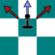
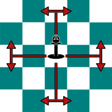
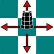
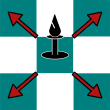
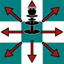
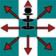

Chess is Awesome
Pawn movement
Pawns have a movement of one square straight forwards. with the exception of its very first movement, when it has the option to move two squares. The pawn only captures one square diagonaly forwards and not where it normaly moves unlike all other pieces.
Knight movement
Knights have the most unusual movement. After moving, a knigt ends up on a square directly to the side of the square two spaces away in any straight direction.
Rook movement
Rooks move in straight lines.(Forward, backwards, left, right) They can move clear across the board or until they run into another piece.
Bishop movement
Bishops move in diagonal directions and will never leave the square color it started on. They can move clear across the board or until they run into another piece.
Queen movement
Queens move in both diagonal and straight lines. They can move clear across the board or until they run into another piece.
King movement
Kings move in all directions but is limited to just one square movement and can not move onto a square attacked by an oppents piece.(And must move if the square it is on comes under attack)